The Palette Window
This window work that manages the palette of current document.
Expand/Collapse
When the  button is clicked, the palette window is expanded/collapsed.
button is clicked, the palette window is expanded/collapsed.
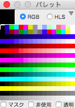
collapse
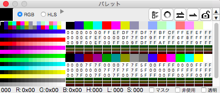
expand
Color Mixing mode
When a number of color are mixed, choose mode of computing either RGB(Red, Green and Blue) or HLS(Hue, Lightness, Saturation).
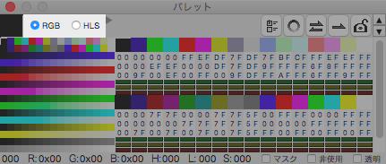
For more detail of color mixing, see there.
Select of color
When the whole color listed area is clicked, such position color is selected.
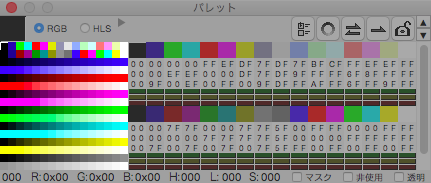
In addtion, when the sub button click(usually, the right bottom on mouse) within the main window, the color of such position dot is selected(in other word, Color Picker with the sub(right) button).
Selected color show on left top corner of the palette window.
When left top place is clicked, immediate below layer is used as if the color pattern.(When below layer used, left top corner is not shown with selected color.)
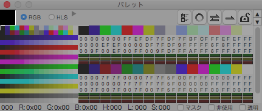
To appear detail setting sheet when whole colors listed area is double clicked.
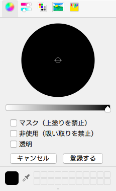
Edit Color Element
In each color detail depicted area(per 32-colors listed), that are able to each color element of each color.
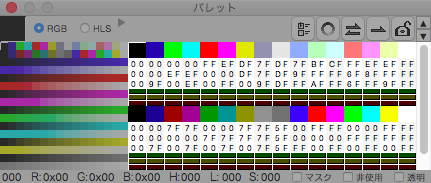
Such list depicts that each color is align in vertical, below illustrate:
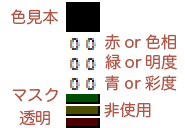
Note that detail of color elements and auxiliary attributes are described in there(for color elements) and there(for auxiliary attributes).
Please note when color mixing mode is choosed as the HLS, color elements are unable to edit on Color Detail lists.
Integrated setting of auxiliary attributes
When the  button is clicked, appear the Auxiliary attributes setting sheet that is able to set attribute for the whole color auxiliary attributes.
button is clicked, appear the Auxiliary attributes setting sheet that is able to set attribute for the whole color auxiliary attributes.
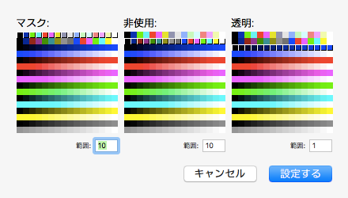
A part of list appear like float that means 'selected'.
In this sheet, each color attributes can be selected by click or drag.
There is text field that specify the number of contiguous if you want to select adjacent colors.
Make Gradient with palette
When the  button is clicked, appear the Palette Gradient sheet that make palette gradient.
button is clicked, appear the Palette Gradient sheet that make palette gradient.
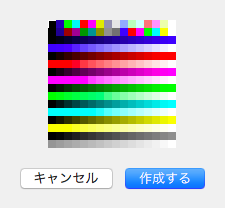
When the main button(left button) clicked, such point color is specified as 'Start Color' and when the sub button(right button) clicked, such point color is specified as 'End Color'. When the create button clicks to make palette gradient, color elements are auto computed between start color and end color.
The palette gradient depend on color mixing mode.
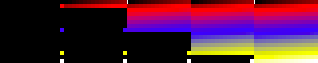
When RGB mixing mode
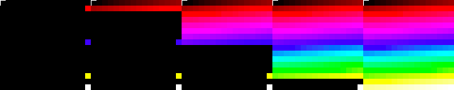
When HLS mixing mode
Color Exchange
When the  button is clicked, appear the Color Exchange sheet that specifies color's elemnt and auxiliary attributes are exchanged.
button is clicked, appear the Color Exchange sheet that specifies color's elemnt and auxiliary attributes are exchanged.
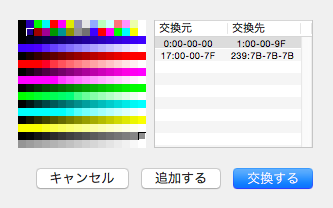
When the main button(left button) clicked, such point color is specified as 'Source Color' and when thesub button(right button) clicked, such point color is specified as 'Destination Color'. When the register button clicked, a pair of colors(source and destrination) set to list. When the exchange button clicked, cause exhanging each pair color.
Color Copy
When the  button is clicked, appear the Color Copy sheet that specifies color's element and auxilary attributes copy to other color.
button is clicked, appear the Color Copy sheet that specifies color's element and auxilary attributes copy to other color.
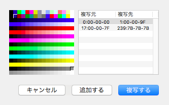
When the main button(left button) clicked, such point color is specified as 'Source Color' and when the sub button(right button) clicked, such point color is specified as 'Destination Color'. When the register button clicked, a pair of colors(source and destrination) set to list. When the copy button clicked, cause copying each pair color.
Lock color elements
When the  button is clicked, the whole color elements are locked.(Whereas auxiliary attributes are able to set.)
button is clicked, the whole color elements are locked.(Whereas auxiliary attributes are able to set.)
This effect is toggle, so that this button click again if you want to unlock.
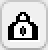
The state of lock
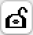
The state of unlock
Scroller Arrows
Buttons on right-top corner on the palette window are scroller arrow. Reluctantly, I'd added their buttons.